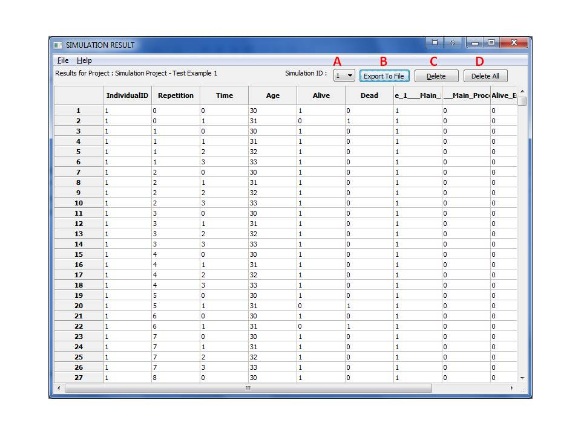

MIST uses Monte Carlo to simulate a disease process where subjects are defined by the user and followed each simulation step until death or until the end of the simulation.
A simulation is a process where each individual in the population progresses through the states of a model, based on a random distribution. The active states for each individual at each step in time are given in the results.
A simulation is created by defining a new simulation project. Within this project the user can define the Model, the model that guides the simulation, and the Population Set as well as some other simulation parameters and additional simulation rules. The steps to create such a simulation project are:
From within the Simulation Project form, select the appropriate tab. The tabs are ordered according to different stages in the simulation. Rules are defined from the bottom of the Simulation Project form (F,G,H,I).
Note that rules fall into the following categories that are represented in different tabs in the form:
After choosing a tab, it is possible to view the rules it contains in the rules table (L) and manipulate them as explained below.
To add a rule to the Simulation, click the upward arrow (J). It will then be added to the table of rules (L).
To remove a rule, highlight the entry in the rules table (L) and click the downwards arrow (K).
To modify a rule, click the downwards arrow (H) to move its contents to the lower row (F), perform modifications and then click the upward arrow (J) to return the modified rule to the rules table. When the rule is moved down, the next record is highlighted. The rule will be added just before the highlighted record; i.e., back into the same position unless you choose to modify the highlighted record. The return position of the rule can be changed by highlighting a different record or it can be added at the end of the rules table if no item is highlighted.
Note that it is possible to change the order of rules by highlighting different rules and using the (J),(K) arrow buttons, and this also allows copying rules.
When the Function (H) is CostWizard and the user double clicks the box, then the Cost/Quality of Life (QoL) Wizard is invoked. It visually shows the Cost / Quality of Life values and parameters in table that is easier to visualize and manipulate. The cost wizard uses the formulas described in the paper: Zhou H, Isaman DJ, Messinger S, Brown MB, Klein R, Brandle M, Herman WH. A computer simulation model of diabetes progression, quality of life, and cost. Diabetes Care. 2005;28(12):2856-63.
Within the Cost/QoL Wizard, highlight the row to be removed In (C), and click the down arrow (G).
In the main window, double-click the Simulation Project to be used. This opens the Simulation form. Verify the information and, when ready, click 'Run Simulation'.
Note that a simulation is influenced by several system option parameters associated with simulation and in some case also with system option parameters associated with population generation from distributions. See Parameters for a complete list of these system option parameters.
The results can be viewed within the Simulation form by clicking 'View Result'. This opens the Simulation Result form.

Every time a Simulation is run, it creates a new Simulation ID for the results; therefore, it is necessary to select the appropriate result ID from the drop-down field (A) at the top of the form. The default is the most recent result.
The columns of the result table report results for all the parameters associated with the simulation including, yet not limited, to the parameters defined in the population set. Within the table, the results are sorted by the Individual sort order in the population (Individual ID), then by the repetition number, then by time. In other words, the first block of result records will describe the first individual; within it the first block will describe the first repetition of the simulation; within it the first record will describe the initial condition as described by the population set. The record afterwards will describe the result of the first simulation step.
Note that a Project with results is considered locked. It is impossible to modify the project and any entity associated with the project such as the Model, or the population set it uses. This protects from ambiguity between project definitions and results. To modify a project with results, you will need to create a copy of it and possibly a copy of its model/population set and possibly other parameters.
Within the Simulation Result form, click the 'Export To File' (B) button. This saves the table as a CSV file, which can be opened by another spreadsheet program.
NOTE: these actions CANNOT BE REVERSED. Use at your own risk.
To eliminate one set of results, make sure the appropriate Simulation ID is selected from the drop-down, and click the 'Delete' button (C).
To remove all results, click the 'Delete All' button (D).
Removing all results from a project will unlock it and will allow modification of some of its parameters.
To copy a project, either click on the copy button at the top of the form or right click the mouse and select the copy record option from the pop up menu. This will create a new copy of the project that does not contain results and can be modified by the user. Note that the copied project name will have an extension with a number. This can be changed by the user.
To remove all results, click the 'Delete All' button.